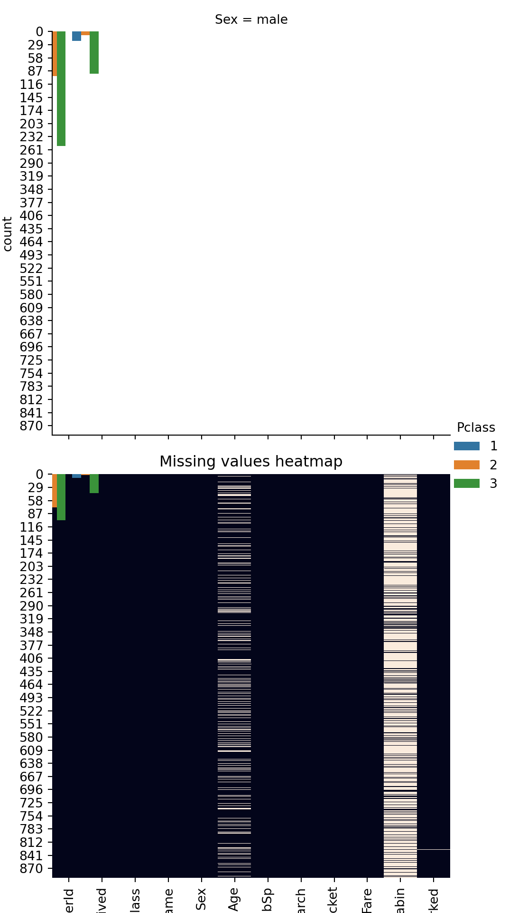
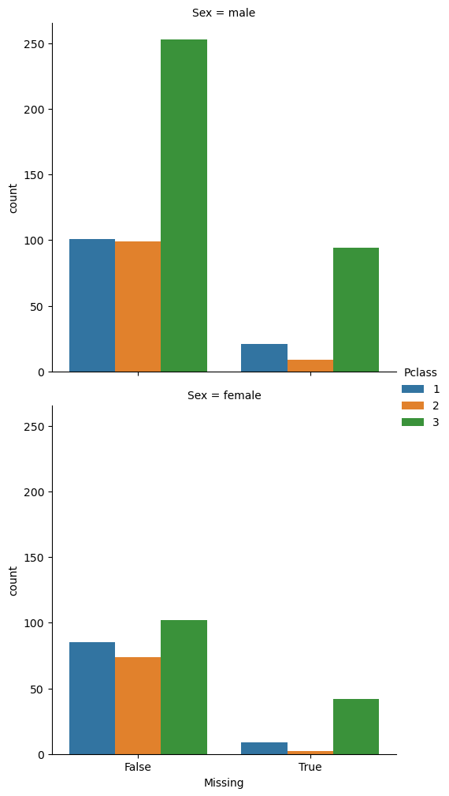

Descriptive Missing values
In many real-world datasets, we may miss some value in some rows or columns. We should know how to handle these missings in many kinds of research and decide if we should execute them or impute them.

Mahyar Sharifi
×
Mahyar Sharifi
Internship, DataMotto
Language: python, r
×
Instructions:
Codes:
#Import Packages
import pandas as pd
import seaborn as sns
#Load Dataset
titanic = sns.load_dataset('titanic')
#Show five samples of dataset
titanic.sample(5)Results:
## survived pclass sex age ... deck embark_town alive alone
## 800 0 2 male 34.0 ... NaN Southampton no True
## 329 1 1 female 16.0 ... B Cherbourg yes False
## 189 0 3 male 36.0 ... NaN Southampton no True
## 804 1 3 male 27.0 ... NaN Southampton yes True
## 457 1 1 female NaN ... D Southampton yes False
##
## [5 rows x 15 columns]Instructions:
Codes:
#Count missing value in all columns
print(titanic.isnull().sum(axis = 0))
#Calculate percentage of missing value in all columns
print(titanic.isnull().sum(axis = 0) * 100 / titanic.shape[0])Results:
## survived 0
## pclass 0
## sex 0
## age 177
## sibsp 0
## parch 0
## fare 0
## embarked 2
## class 0
## who 0
## adult_male 0
## deck 688
## embark_town 2
## alive 0
## alone 0
## dtype: int64## survived 0.000000
## pclass 0.000000
## sex 0.000000
## age 19.865320
## sibsp 0.000000
## parch 0.000000
## fare 0.000000
## embarked 0.224467
## class 0.000000
## who 0.000000
## adult_male 0.000000
## deck 77.216611
## embark_town 0.224467
## alive 0.000000
## alone 0.000000
## dtype: float64Instructions:
Codes:
#Count missing value in all rows
print(titanic.isnull().sum(axis = 1))
#Calculate percentage of missing value in all rows
print(titanic.isnull().sum(axis = 1) * 100 / titanic.shape[1])Results:
## 0 1
## 1 0
## 2 1
## 3 0
## 4 1
## ..
## 886 1
## 887 0
## 888 2
## 889 0
## 890 1
## Length: 891, dtype: int64## 0 6.666667
## 1 0.000000
## 2 6.666667
## 3 0.000000
## 4 6.666667
## ...
## 886 6.666667
## 887 0.000000
## 888 13.333333
## 889 0.000000
## 890 6.666667
## Length: 891, dtype: float64Instructions:
Codes:
sns.heatmap(titanic.isnull(), cbar = False).set_title("Missing values heatmap")Results:

Instructions:
Codes:
#Drop columns with ---
titanic_deck_dropped = titanic.drop(['deck'], axis = 1)
#Filter row with ---
titanic_row_filtered = titanic[titanic.isnull().sum(axis = 1) * 100 / titanic.shape[1] < 13].sample(5)Results:
Instructions:
Codes:
#Calculate mean of age ---
mean_age = titanic['age'].mean()
print(mean_age)
#Fill missing value with constant value
titanic_row_filtered['age'] = titanic_row_filtered['age'].fillna(mean_age)
#Number of missing after filling
print(titanic_row_filtered['age'].isnull().sum())Results:
## 29.69911764705882## 0Instructions:
Codes:
#Add columns ---
titanic['Missing'] = titanic['age'].isnull()
#Plot ---
sns.catplot(x="Missing", hue="class", kind="count", data=titanic, row = 'sex')Results:

Instructions:
Codes:
#cal ---
age_for_male = titanic[(titanic['sex']=='male') & (titanic['class']=='Third')].age.mean()
#Cal---
age_for_female= titanic[(titanic['sex']=='female') & (titanic['class']=='Third')].age.mean()
#Fill for ---
titanic.loc[titanic['sex']=='male',['age']] = titanic.loc[titanic['sex']=='male',['age']].fillna(age_for_male)
#Fill for ---
titanic.loc[titanic['sex']=='female',['age']] = titanic.loc[titanic['sex']=='female',['age']].fillna(age_for_female)